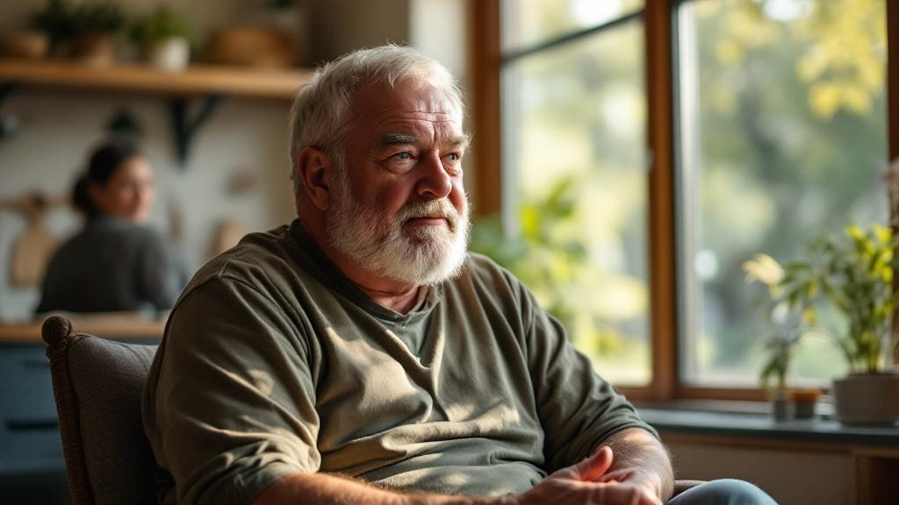
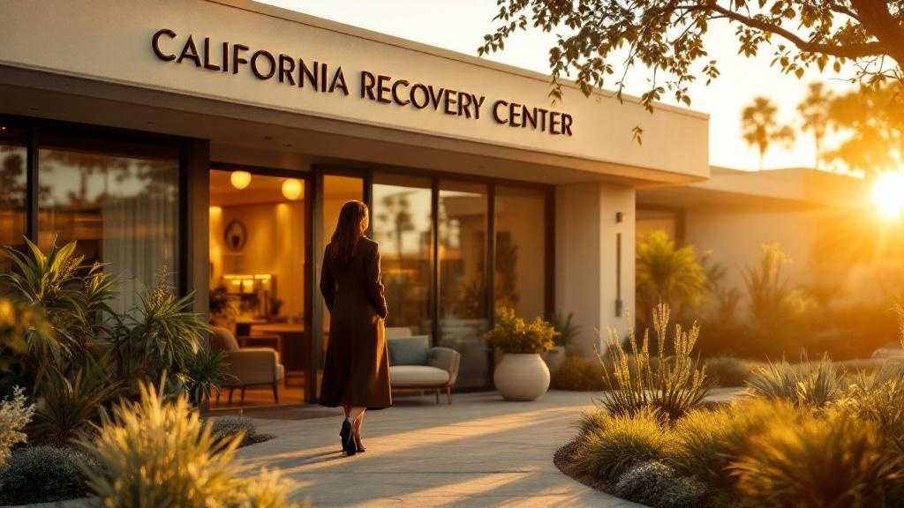

Rehab Near Me: How to Find the Best Addiction Treatment in California
Rehab Near Me: Your Complete Guide to Finding Quality Addiction Treatment in California
The search for rehab near me often begins during one of life’s most challenging moments—when you or a loved one desperately needs professional addiction treatment. This critical decision shouldn’t be rushed, yet the urgency of getting help can feel overwhelming. Understanding what constitutes quality care and knowing where to look can make the difference between temporary sobriety and lasting recovery.
Finding quality rehab near me means locating licensed addiction treatment centers that offer evidence-based therapies for substance use disorders. California Recovery Center provides comprehensive inpatient and outpatient programs tailored to individual recovery needs, combining traditional therapeutic approaches with modern, holistic treatment methods.
California’s diverse treatment landscape offers everything from luxury residential facilities to community-based programs, giving individuals multiple pathways to recovery. The advantage of choosing local treatment extends beyond convenience—nearby facilities provide immediate access to emergency care, enable family involvement in the recovery process, and create opportunities for building local support networks that continue after treatment ends.
Proximity to home doesn’t just mean shorter travel times; it means maintaining connections that strengthen your foundation for long-term sobriety.
When evaluating inpatient rehab facilities local to your area, verifying proper licensing, accreditation standards, and treatment philosophies becomes essential. The rehab near me experts at California Recovery Center emphasize that quality care selection requires understanding each facility’s approach to personalized treatment, staff credentials, and success rates in helping individuals achieve sustainable recovery.
What Types of Rehab Near Me Are Available?
Rehabilitation centers near you typically offer three main levels of care: inpatient residential treatment, intensive outpatient programs, and standard outpatient services. Each level addresses different severity levels of addiction and life circumstances, ensuring personalized care paths that match individual recovery needs.
Understanding your local treatment options helps you make informed decisions about your recovery journey. Modern addiction treatment has evolved to provide comprehensive, evidence-based approaches that address both substance use and underlying mental health conditions.
Available Rehab Treatment Levels:
Inpatient Residential Treatment - 24/7 medical supervision in a controlled environment with structured daily programming
Intensive Outpatient Programs (IOP) - 3-5 days weekly treatment while maintaining work and family responsibilities
Standard Outpatient Services - 1-3 weekly sessions for ongoing support and mild to moderate substance use
Partial Hospitalization Programs (PHP) - Daily treatment with evening return home
Detoxification Services - Medically supervised withdrawal management
Inpatient rehab facilities local to your area provide the highest level of care, typically lasting 30-90 days. These programs include individual therapy, group counseling, medical monitoring, and holistic wellness activities. California Recovery Center’s comprehensive residential programs exemplify this boutique approach with luxury amenities and individualized treatment plans.
Outpatient addiction treatment options work best for individuals with strong home support systems and mild to moderate addiction severity. These programs allow continued employment and family involvement while receiving professional treatment.
The key to successful recovery lies in matching treatment intensity to individual needs and circumstances, ensuring comprehensive care without unnecessary disruption to stable life elements.
When evaluating how to choose a rehabilitation center, consider factors like accreditation, evidence-based treatment methods, staff credentials, and specialized programs for co-occurring disorders.
How Do I Choose the Right Rehabilitation Center?
Selecting the best rehabilitation center requires evaluating accreditation status, treatment modalities offered, staff credentials, and alignment with your specific substance use and mental health needs. This comprehensive assessment ensures you receive quality care tailored to your recovery journey.
Key factors to evaluate when choosing a rehabilitation center:
Accreditation and Licensing - Verify Joint Commission accreditation and state licensing for quality assurance
Treatment Specializations - Assess whether programs offer dual diagnosis treatment capabilities for co-occurring mental health disorders
Staff Qualifications - Review credentials of medical directors, therapists, and counselors
Treatment Approaches - Confirm availability of evidence-based therapies alongside holistic modalities
Location Considerations - Weigh proximity to support systems versus distance from environmental triggers
Program Duration Options - Evaluate inpatient rehab facilities local to your area and outpatient alternatives
Modern addiction treatment recognizes that personalized care significantly improves long-term recovery outcomes, making individualized assessment crucial to center selection.
Consider practical factors like insurance coverage, cost of drug rehab services, and available amenities. California Recovery Center’s personalized Healthcare approach exemplifies how boutique facilities combine luxury amenities with clinical excellence, offering comprehensive detoxification and residential programs.
Location plays a crucial role in recovery success. While private addiction clinics close by provide family support access, sometimes distance from familiar triggers proves beneficial. Research shows that individuals who receive treatment matching their specific addiction patterns and mental health needs achieve significantly higher success rates than those in generic programs.
What Is the Cost of Drug Rehab Services and How Do I Pay?
The cost of drug rehab services varies dramatically based on care level, duration, and amenities, ranging from free state-funded programs to $50,000+ monthly for luxury residential facilities. Most quality centers accept insurance and offer payment plans to make treatment accessible.
Private insurance typically covers 60-90% of evidence-based treatment costs under mental health parity laws. Major carriers recognize addiction as a medical condition, providing substantial coverage for inpatient rehab facilities local to your area. Coverage varies by plan, but most include:
Detoxification services (3-7 days)
Residential treatment (30-90 days)
Outpatient programs and therapy sessions
Medication-assisted treatment (MAT)
For uninsured individuals, Medicaid and state-funded programs provide crucial access to care. California’s robust public health system ensures no one is denied treatment due to financial constraints.
Private addiction clinics close by, like California Recovery Center, offer sliding scale fees and scholarship programs to bridge affordability gaps. These boutique facilities combine luxury amenities with personalized care, making high-quality treatment accessible across income levels.
| Treatment Level | Average Monthly Cost | Insurance Coverage | Payment Options |
|---|---|---|---|
| Outpatient | $1,000-$5,000 | 80-90% | Insurance, sliding scale |
| Intensive Outpatient | $3,000-$8,000 | 70-85% | Payment plans available |
| Residential | $15,000-$30,000 | 60-80% | Insurance, financing |
| Luxury Residential | $30,000-$80,000 | 60-70% | Private pay, scholarships |
“Quality addiction treatment is an investment in lifelong recovery. Modern facilities prioritize making evidence-based care financially accessible through multiple payment pathways.”
Contact potential rehab near me facilities directly to discuss specific insurance verification and payment arrangements tailored to your situation.
How Long Can a Person Stay in Rehab?

Treatment duration ranges from 5-7 day medical detox to 90-day residential programs, with many patients transitioning through multiple levels of care totaling 6-12 months of active treatment and ongoing aftercare.
The length of stay in rehabilitation programs depends on several critical factors including addiction severity, substance type, mental health conditions, and individual progress. California Recovery Center’s personalized Healthcare approach recognizes that recovery timelines vary significantly between patients, which is why treatment plans are tailored to each person’s unique circumstances.
Standard Treatment Duration Options:
30-Day Programs - Suitable for mild addiction cases with strong family support and stable employment
60-Day Residential Treatment - Recommended for moderate addiction with co-occurring mental health issues
90-Day Extended Care - Optimal for severe substance use disorders and multiple failed recovery attempts
6-12 Month Continuum - Comprehensive care including residential, outpatient, and sober living transitions
Research from the National Institute on Drug Abuse indicates that residential rehab for substance use lasting 90 days or longer produces significantly better outcomes than shorter programs. However, inpatient rehab facilities local to your area should offer flexible programming that can extend or modify treatment duration based on progress.
“Recovery isn’t bound by calendar dates - it’s determined by individual readiness and clinical milestones that indicate sustainable sobriety skills have been developed.”
Many patients benefit from transitioning between care levels, starting with detox, moving to residential treatment, then outpatient addiction treatment options while living in sober housing. This graduated approach allows for extended support lasting 6-24 months, dramatically improving long-term recovery rates while maintaining connection to family and work responsibilities.
What Specialized Programs Should I Look For?

Quality rehab near me should offer specialized tracks for specific populations including youth drug treatment programs, gender-specific care, LGBTQ+ affirming treatment, and dual diagnosis capabilities for mental health and addiction help.
When evaluating inpatient rehab facilities local to your area, prioritize centers that understand unique population needs through targeted programming:
Essential Specialized Programs to Seek:
Adolescent and young adult tracks with family therapy integration
Gender-specific treatment environments addressing trauma-informed care
LGBTQ+ affirming programs with culturally competent staff
Dual diagnosis treatment for co-occurring mental health conditions
Veterans-focused care integrating PTSD and military trauma
Professional/executive programs accommodating career demands
Chronic pain management for those with legitimate medical needs
Youth programs address developmental brain differences and family systems involvement, recognizing that adolescent addiction requires specialized approaches beyond adult models. These programs typically include educational components and extensive family therapy.
Gender-specific treatment eliminates romantic distractions while addressing trauma-specific issues more effectively. Women-only programs often focus on relationships, parenting concerns, and sexual trauma, while men-only environments address societal pressure and emotional expression.
Veterans programs integrate PTSD treatment with substance use recovery, understanding the complex relationship between military trauma and self-medication patterns.
California Recovery Center’s specialized Healthcare programs demonstrate how boutique facilities can offer multiple specialized tracks within personalized treatment frameworks. When researching outpatient addiction treatment options, ensure your chosen facility provides evidence-based approaches tailored to your specific demographic needs rather than one-size-fits-all programming.
What Is the Hardest Addiction to Quit and Why Does It Matter?
Alcohol, benzodiazepines, and opioids are consistently ranked as the hardest addictions to quit due to severe withdrawal risks, intense cravings, and high relapse rates—requiring medically supervised detox and long-term maintenance strategies for safe recovery.
Understanding which substances pose the greatest recovery challenges is crucial when searching for rehab near me services. The severity of addiction varies significantly based on how substances affect brain chemistry and create physical dependence.
Alcohol withdrawal presents particularly dangerous complications, including life-threatening seizures and delirium tremens (DTs), which can occur 48-96 hours after the last drink. According to the National Institute on Alcohol Abuse and Alcoholism, approximately 5% of people experiencing alcohol withdrawal develop DTs, making professional supervision essential at inpatient rehab facilities local to your area.
Benzodiazepine dependence requires extraordinarily careful management, often involving slow tapering protocols over months or even years. Abrupt discontinuation can trigger seizures, psychosis, and prolonged withdrawal symptoms that may persist for months.
Opioid addiction carries relapse rates of 40-60% without medication-assisted treatment (MAT), according to research from the Substance Abuse and Mental Health Services Administration. Modern outpatient addiction treatment options incorporate medications like buprenorphine and naltrexone to manage cravings effectively.
“The hardest addictions to overcome require comprehensive medical intervention, not willpower alone. Professional treatment dramatically improves outcomes.”
These challenging addictions highlight why California Recovery Center’s evidence-based Healthcare approaches combine medical supervision with personalized therapy protocols, addressing both physical dependence and psychological triggers for lasting recovery success.
How Do You Qualify for Inpatient Rehab?
Qualification for inpatient rehab typically requires documented substance use disorder diagnosis, failed attempts at lower care levels, medical necessity determination by a licensed professional, and physical stabilization for program participation.
The qualification process involves comprehensive assessment by healthcare professionals who evaluate multiple factors to determine the appropriate level of care. Inpatient rehab facilities local to your area follow standardized criteria to ensure patients receive medically necessary treatment.
Essential Qualification Requirements:
Medical Assessment - Licensed physician evaluation confirming substance use disorder diagnosis
Treatment History Documentation - Records showing unsuccessful outpatient treatment attempts
Severity Evaluation - Clinical assessment of withdrawal risks and addiction severity
Insurance Authorization - Pre-approval demonstrating medical necessity for residential care
Physical Clearance - Medical stability assessment ensuring safe program participation
Medical necessity criteria include several high-risk factors that justify intensive residential treatment. Severe withdrawal symptoms requiring medical monitoring, recent overdose history, or co-occurring psychiatric conditions often meet inpatient qualification standards. Mental health and addiction help providers assess these complex cases individually.
Insurance companies typically require documentation that outpatient addiction treatment options have been attempted unsuccessfully before approving residential care coverage.
Most residential rehab for substance use programs require tuberculosis testing and comprehensive medical clearance before admission. This ensures patient safety and prevents disease transmission in group living environments.
California Recovery Center’s proven healthcare strategies include thorough qualification assessments that match patients with appropriate care levels. Their clinical team evaluates each case using evidence-based criteria, ensuring individuals receive the intensive support necessary for successful recovery while meeting insurance requirements for coverage approval.
Frequently Asked Questions About Finding Rehab Near Me
Finding the right rehab near me requires careful research and consideration of your specific needs. Start by evaluating inpatient rehab facilities local to your area, as proximity can significantly impact family involvement and long-term support systems.
When searching for outpatient addiction treatment options, consider these essential factors:
Treatment modalities offered - evidence-based therapies, holistic approaches, and specialized programs
Licensing and accreditation - verify credentials through state health departments
Staff qualifications - board-certified physicians, licensed therapists, and addiction specialists
Insurance acceptance - coverage verification and financial assistance options
Success rates - completion rates and long-term recovery outcomes
The most effective rehabilitation centers combine personalized care with comprehensive treatment approaches, addressing both the addiction and underlying mental health conditions.
California Recovery Center’s proven healthcare strategies demonstrate how boutique facilities can provide individualized attention often missing in larger programs. When evaluating how to choose a rehabilitation center, prioritize facilities that offer:
Comprehensive assessment and personalized treatment planning
Medical detoxification services with 24/7 supervision
Mental health and addiction help integrated into treatment
Family therapy and education programs
Aftercare planning and relapse prevention strategies
Research indicates that individuals who receive treatment at accredited facilities show significantly higher recovery rates. Contact multiple facilities to discuss your specific needs and compare their approaches before making your final decision.
Taking the First Step: Your Recovery Journey Starts Today
Finding the right rehab near me requires research, honest self-assessment, and reaching out for professional guidance. California Recovery Center stands ready to help you navigate treatment options and begin lasting recovery.
Recovery from addiction is possible, and you don’t have to navigate this journey alone. Whether you’re searching for inpatient rehab facilities local to your area or exploring outpatient addiction treatment options, the most important step is reaching out for help today.
California Recovery Center’s proven healthcare strategies provide comprehensive support tailored to your unique circumstances:
24/7 immediate assessment available by phone or online consultation
Personalized treatment planning that addresses your specific substance use patterns and life circumstances
Continuum of care supporting you from medically-supervised detox through lifelong aftercare and relapse prevention
“Every recovery journey is unique, but no one should face addiction alone. Professional guidance makes all the difference in finding sustainable sobriety.”
Don’t let another day pass wondering about treatment options. Whether you need residential rehab for substance use or are exploring mental health and addiction help, professional support is available right now. The path to recovery begins with a single phone call or online inquiry.
Contact California Recovery Center today for a confidential assessment and discover how personalized, evidence-based treatment can transform your life. Your recovery journey starts now.
Contact California Recovery Center Now
Don’t let another day pass struggling with addiction. The path to recovery starts with a single decision, and finding the right rehab near me can transform your life or the life of someone you love. At California Recovery Center, we understand that seeking help takes courage, and we’re here to support you every step of the way.
“Recovery is not a destination, but a journey of rediscovering your authentic self. Every moment you wait is a moment your healing is delayed.” - CRC Clinical Team
Our personalized approach to addiction treatment means you’re not just another case number. When you choose California Recovery Center’s proven healthcare strategies, you’re selecting:
Immediate assessment and customized treatment planning
Evidence-based therapies combined with holistic healing approaches
Luxury amenities in a supportive, stigma-free environment
Comprehensive programs from detox through outpatient care
The decision to seek substance abuse recovery programs becomes easier when you have expert guidance. Our admissions team is available now to discuss your unique situation, insurance coverage, and treatment options that fit your lifestyle.
Call us today and speak with our compassionate intake specialists who can help you understand how to choose the right rehabilitation path. Your recovery journey can begin with this phone call - because the best time to start healing is right now.
Don’t wait for tomorrow. Your new life starts today.
Frequently Asked Questions
Q: What is the hardest addiction to quit?
Alcohol, benzodiazepines, and opioids are widely considered the most difficult addictions to overcome due to severe withdrawal risks and powerful physical dependencies. These substances create profound chemical changes in the brain that drive intense cravings and compulsive use.
Benzodiazepines and alcohol withdrawal can trigger life-threatening seizures or delirium tremens, while opioids cause debilitating flu-like symptoms that often lead to relapse. Success requires medically supervised detox at rehab near me solutions with 24/7 monitoring. At California Recovery Center, our clinical team specializes in managing these high-risk withdrawals through evidence-based protocols, ensuring safety during the critical first phase of inpatient rehab facilities local residents trust.
Q: How long can a person stay in rehab?
Treatment duration varies from brief 5-7 day detox programs to extended 90+ day residential stays, with many individuals benefiting from 6-12 months of continuous care including aftercare support. The length depends on substance type, addiction severity, and individual progress markers.
Research indicates that 90 days of treatment significantly improves long-term outcomes compared to shorter programs. California Recovery Center offers flexible outpatient addiction treatment options following residential care to extend support. Whether you need short-term stabilization or long-term rehab near me programming, our team creates personalized timelines that ensure sustainable recovery without rushing the healing process.
Q: How much is it for someone to go to rehab?
Treatment costs span from free state-funded programs to $50,000+ monthly for luxury amenities, though most private insurance plans cover significant portions of evidence-based care. The cost of drug rehab services depends on facility type, length of stay, and medical complexity.
Many best alcohol rehab facilities in my area accept major insurance providers, reducing out-of-pocket expenses substantially. California Recovery Center works with most PPO plans and offers transparent pricing for private addiction clinics close by standards. We believe financial barriers shouldn’t prevent healing, so our admissions team verifies benefits immediately and discusses payment options, ensuring you understand coverage before beginning treatment.
Q: How do you qualify for inpatient rehab?
Qualification requires a formal substance use disorder diagnosis, documented medical necessity, and medical clearance confirming you can safely participate in programming. Many insurers require documented failure at outpatient levels or imminent safety risks to approve residential care.
The assessment process evaluates withdrawal severity, co-occurring mental health conditions, and previous treatment history. To find substance abuse recovery programs matching your medical needs, California Recovery Center provides comprehensive evaluations determining the appropriate care level. Our admissions specialists navigate insurance requirements while ensuring you receive rehab near me solutions that address your specific clinical situation. We also guide families through how to choose a rehabilitation center based on medical necessity criteria.
Q: Drug rehab vs alcohol rehab: What’s the difference?
While both utilize similar therapeutic foundations, drug rehab addresses diverse substances requiring specific withdrawal protocols, whereas alcohol rehab specifically manages delirium tremens risk and hepatic complications. Benzodiazepines, opioids, and stimulants each demand distinct medical approaches during detox.
Alcohol treatment requires specialized monitoring for Wernicke-Korsakoff syndrome and cirrhosis-related complications. When researching how to choose a rehabilitation center, consider whether they offer substance-specific expertise. California Recovery Center provides tailored protocols for both pathways through our inpatient rehab facilities local network, ensuring specialized medical care. Our rehab near me programs address unique physiological risks associated with your specific substance use disorder.
Q: Where can I find addiction support after treatment?
Post-treatment support encompasses 12-step fellowship meetings, structured alumni programs, sober living environments, continued therapy, and digital recovery communities that provide ongoing accountability. These resources create essential safety nets during vulnerable early recovery phases.
Sober living homes offer transitional housing with peer support, while alumni networks foster lasting connections with others in recovery. California Recovery Center maintains robust aftercare programming and partners with youth drug treatment programs for age-appropriate ongoing care. Our rehab near me approach includes lifetime alumni support, ensuring graduates access community resources and clinical guidance long after completing primary treatment.